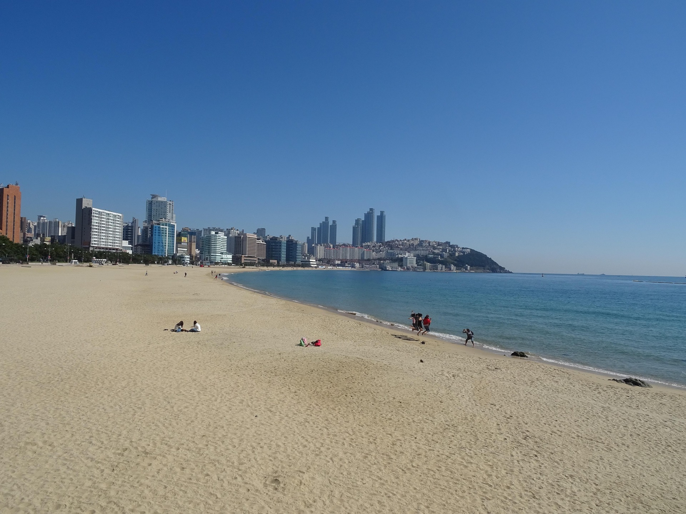

Coastal tourism in South Korea focuses on visiting the country’s beautiful beaches, islands, and seaside towns. Popular destinations include Haeundae Beach in Busan and Jeju Island’s coastlines, offering swimming, water sports, and scenic views. Visitors can enjoy relaxation, seafood, and coastal festivals, making it a popular choice for summer vacations.